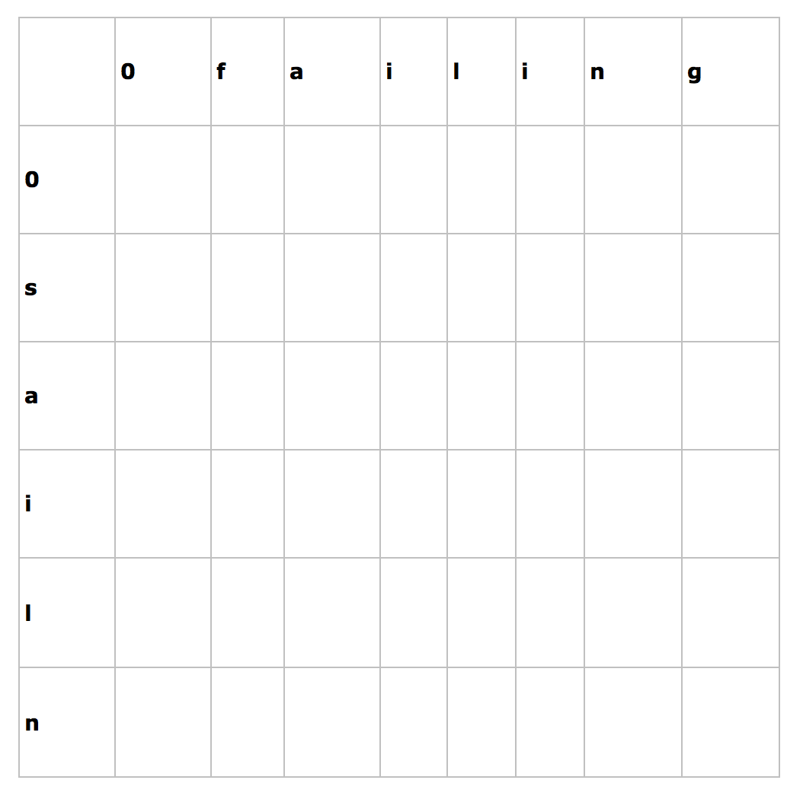
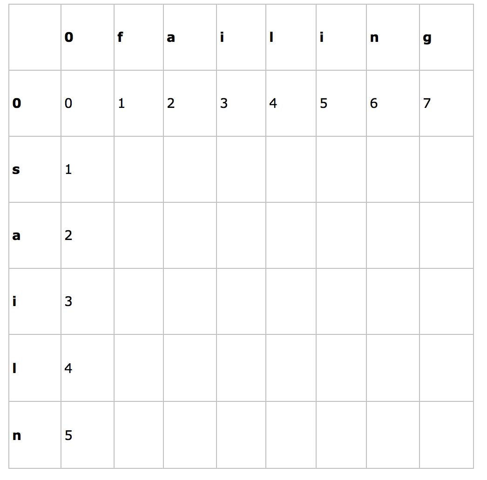
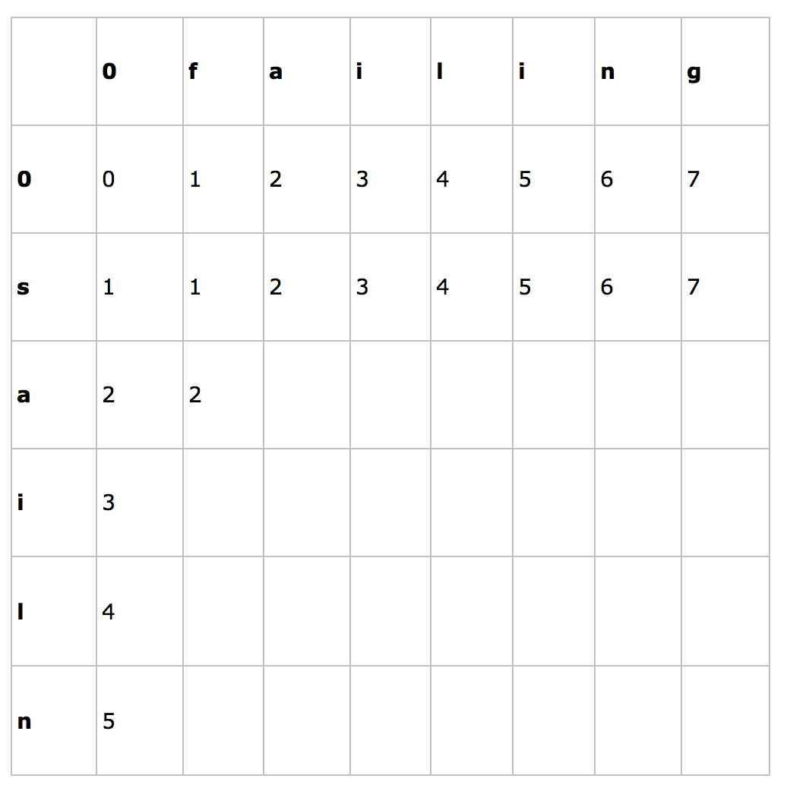
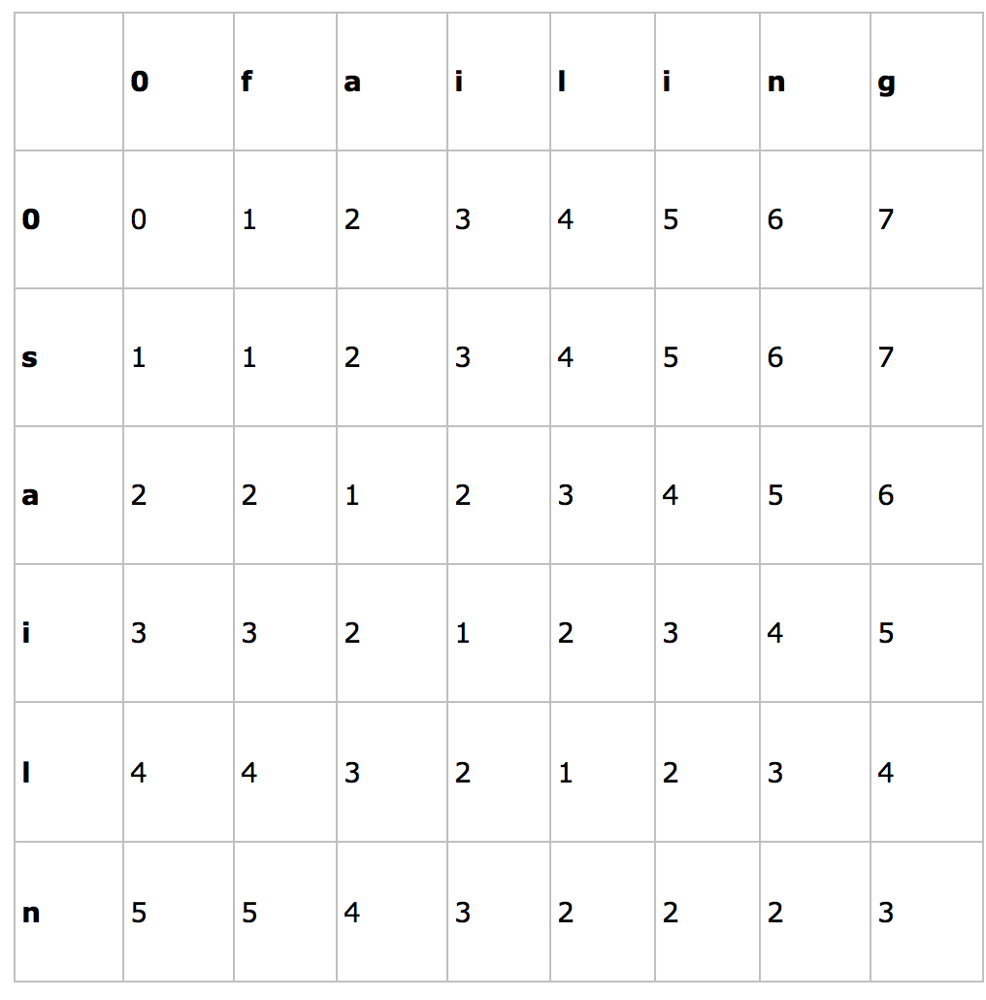

编辑距离，又称Levenshtein距离，是指两个字串之间，由一个转成另一个所需的最少编辑操作次数。许可的编辑操作包括将一个字符替换成另一个字符，插入一个字符，删除一个字符。
例如将kitten一字转成sitting：
sitten （k→s） sittin （e→i） sitting （→g） 俄罗斯科学家Vladimir Levenshtein在1965年提出这个概念。
问题：找出字符串的编辑距离，即把一个字符串s1最少经过多少步操作变成编程字符串s2，操作有三种，添加一个字符，删除一个字符，修改一个字符
解析：
首先定义这样一个函数——edit(i, j)，它表示第一个字符串的长度为i的子串到第二个字符串的长度为j的子串的编辑距离。
显然可以有如下动态规划公式：
if i == 0 且 j == 0，edit(i, j) = 0 if i == 0 且 j > 0，edit(i, j) = j if i > 0 且j == 0，edit(i, j) = i if i ≥ 1 且 j ≥ 1 ，edit(i, j) == min{ edit(i-1, j) + 1, edit(i, j-1) + 1, edit(i-1, j-1) + f(i, j) }，当第一个字符串的第i个字符不等于第二个字符串的第j个字符时，f(i, j) = 1；否则，f(i, j) = 0。


计算edit(1, 1)，edit(0, 1) + 1 == 2，edit(1, 0) + 1 == 2，edit(0, 0) + f(1, 1) == 0 + 1 == 1，min(edit(0, 1)，edit(1, 0)，edit(0, 0) + f(1, 1))==1，因此edit(1, 1) == 1。 依次类推：

edit(2, 1) + 1 == 3，edit(1, 2) + 1 == 3，edit(1, 1) + f(2, 2) == 1 + 0 == 1，其中s1[2] == 'a' 而 s2[1] == 'f'‘，两者不相同，所以交换相邻字符的操作不计入比较最小数中计算。以此计算，得出最后矩阵为：

算法证明 感谢原作者Pandora 原文网址 ： Levenshtein Distance (编辑距离) 算法详解
这个算法计算的是将s[1…i]转换为t[1…j]（例如将kitten转换为sitting）所需最少的操作数（也就是所谓的编辑距离），这个操作数被保存在d[i,j]（d代表的就是上图所示的二维数组）中。
在第一行与第一列肯定是正确的，这也很好理解，例如我们将kitten转换为空字符串，我们需要进行的操作数为kitten的长度（所进行的操作为将kitten所有的字符丢弃）。 我们对字符可能进行的操作有三种： 如果我们可以使用k个操作数把s[1…i]转换为t[1…j-1]，我们只需要把t[j]加在最后面就能将s[1…i]转换为t[1…j]，操作数为k+1 如果我们可以使用k个操作数把s[1…i-1]转换为t[1…j]，我们只需要把s[i]从最后删除就可以完成转换，操作数为k+1 如果我们可以使用k个操作数把s[1…i-1]转换为t[1…j-1]，我们只需要在需要的情况下（s[i] != t[j]）把s[i]替换为t[j]，所需的操作数为k+cost（cost代表是否需要转换，如果s[i]==t[j]，则cost为0，否则为1）。 将s[1…n]转换为t[1…m]当然需要将所有的s转换为所有的t，所以，d[n,m]（表格的右下角）就是我们所需的结果。 这个证明过程只能证明我们可以得到结果，但并没有证明结果是最小的（即我们得到的是最少的转换步骤）。所以我们引进了另外一个算法，即d[i,j]保存的是上述三种操作中操作数最小的一种。这就保证了我们获得的结果是最小的操作数（可使用argument by contradiction进行证明，离题太远，忽略。。）